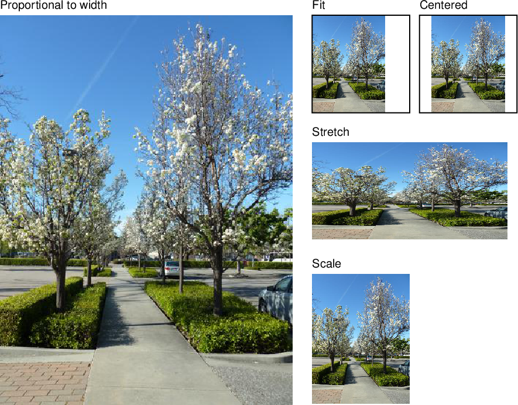

Images in PDFKit
Adding images to PDFKit documents is an easy task. Just pass an image path, buffer, or data uri with base64 encoded data to
the image method along with some optional arguments. PDFKit supports the
JPEG and PNG formats. If an X and Y position are not provided, the image is
rendered at the current point in the text flow (below the last line of text).
Otherwise, it is positioned absolutely at the specified point. The image will
be scaled according to the following options.
- Neither
widthorheightprovided - image is rendered at full size widthprovided but notheight- image is scaled proportionally to fit in the providedwidthheightprovided but notwidth- image is scaled proportionally to fit in the providedheight- Both
widthandheightprovided - image is stretched to the dimensions provided scalefactor provided - image is scaled proportionally by the provided scale factorfitarray provided - image is scaled proportionally to fit within the passed width and heightcoverarray provided - image is scaled proportionally to completely cover the rectangle defined by the passed width and heightlink- a URL to link this image to (shortcut to create an annotation)goTo- go to anchor (shortcut to create an annotation)destination- create anchor to this image
When a fit or cover array is provided, PDFKit accepts these additional options:
align- horizontally align the image, the possible values are'left','center'and'right'valign- vertically align the image, the possible values are'top','center'and'bottom'
Here is an example showing some of these options.
// Scale proprotionally to the specified width
doc.image('images/test.jpeg', 0, 15, {width: 300})
.text('Proportional to width', 0, 0);
// Fit the image within the dimensions
doc.image('images/test.jpeg', 320, 15, {fit: [100, 100]})
.rect(320, 15, 100, 100)
.stroke()
.text('Fit', 320, 0);
// Stretch the image
doc.image('images/test.jpeg', 320, 145, {width: 200, height: 100})
.text('Stretch', 320, 130);
// Scale the image
doc.image('images/test.jpeg', 320, 280, {scale: 0.25})
.text('Scale', 320, 265);
// Fit the image in the dimensions, and center it both horizontally and vertically
doc.image('images/test.jpeg', 430, 15, {fit: [100, 100], align: 'center', valign: 'center'})
.rect(430, 15, 100, 100).stroke()
.text('Centered', 430, 0);This example produces the following output:

That is all there is to adding images to your PDF documents with PDFKit. Now let's look at adding outlines.